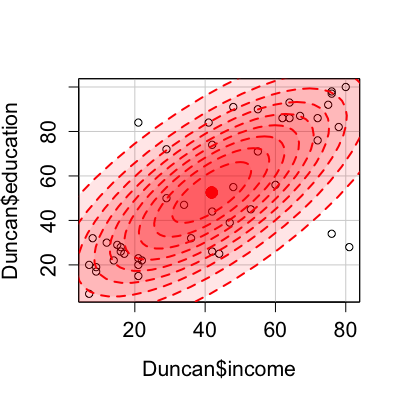
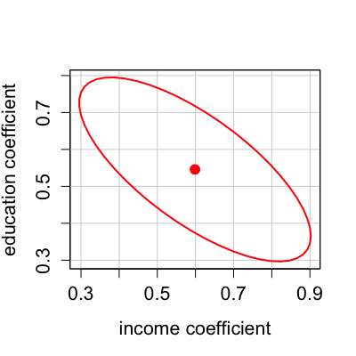
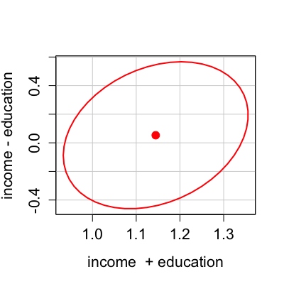
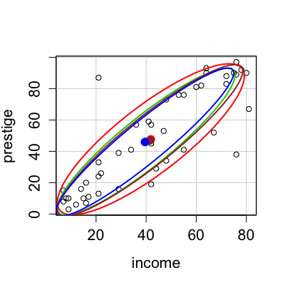

ellipse(center, shape, radius, log = "", center.pch = 19, center.cex = 1.5, segments = 51, draw = TRUE, add = draw, xlab = "", ylab = "", col = palette()[2], lwd = 2, fill = FALSE, fill.alpha = 0.3, grid = TRUE, ...) dataEllipse(x, y, weights, log = "", levels = c(0.5, 0.95), center.pch = 19, center.cex = 1.5, draw = TRUE, plot.points = draw, add = !plot.points, segments = 51, robust = FALSE, xlab = deparse(substitute(x)), ylab = deparse(substitute(y)), col = palette()[1:2], lwd = 2, fill = FALSE, fill.alpha = 0.3, grid = TRUE, labels, id.method = "mahal", id.n = if (id.method[1] == "identify") Inf else 0, id.cex = 1, id.col = palette()[1], ...) confidenceEllipse(model, ...) confidenceEllipse(model, which.coef, L, levels = 0.95, Scheffe = FALSE, dfn, center.pch = 19, center.cex = 1.5, segments = 51, xlab, ylab, col = palette()[2], lwd = 2, fill = FALSE, fill.alpha = 0.3, draw = TRUE, add = !draw, ...) confidenceEllipse(model, chisq, ...) confidenceEllipse(model, which.coef, L, levels = 0.95, Scheffe = FALSE, dfn, center.pch = 19, center.cex = 1.5, segments = 51, xlab, ylab, col = palette()[2], lwd = 2, fill = FALSE, fill.alpha = 0.3, draw = TRUE, add = !draw, ...)
2 * 2 shape (or covariance) matrix."x" if the x-axis is logged, "y" if the y-axis is
logged, and "xy" or "yx" if both axes are logged. The
default is "", indicating that neither axis is logged.FALSE or NULL the center point isn't plotted.TRUE produce graphical output; if FALSE, only invisibly return coordinates of ellipse(s).TRUE add ellipse(s) to current plot.y is missing) a 2-column numeric matrix.x.x and y to be used by cov.wt
or cov.trob in computing a weighted covariance matrix; if absent, weights of 1 are used.FALSE data ellipses are drawn,
but points are not plotted.TRUE use the cov.trob function in the MASS package
to calculate the center and covariance matrix for the data ellipse.lm or glm.L matrix is given, it takes precedence over the which.coef
argument. L should have two rows and as many columns as there are coefficients. It can be given directly as a
numeric matrix, or specified by a pair of character-valued expressions, in the same manner as for the
link{linearHypothesis} function, but with no right-hand side.TRUE scale the ellipse so that its projections onto the
axes give Scheffe confidence intervals for the coefficients.Scheffe is TRUE, or to 2 otherwise; selecting dfn = 1 will
draw the ``confidence-interval generating'' ellipse, with projections on the axes
corresponding to individual confidence intervals with the stated level of coverage.TRUE, the confidence ellipse for the coefficients in a generalized linear model are
based on the chisquare statistic, if FALSE on the $F$-statistic. This corresponds to using the default
and linear-model methods respectively.palette
and par). For dataEllipse, two colors can be given, in
which case the first is for plotted points and the second for lines and the ellipse center.2 (see par).col (default, FALSE)?0.3).plot and
line.id.n=0 for labeling no points. See
showLabels for details of these arguments.These functions draw ellipses, including data ellipses, and confidence ellipses for linear, generalized linear, and possibly other models.
The ellipse is computed by suitably transforming a unit circle.
dataEllipse superimposes the normal-probability contours over a scatterplot
of the data.
These functions are mainly used for their side effect of producing plots. For
greater flexibility (e.g., adding plot annotations), however, ellipse returns invisibly the (x, y) coordinates of the calculated ellipse.
dataEllipse and confidenceEllipse return invisibly the coordinates of one or more ellipses, in the latter instance a list named by
levels.
Fox, J. (2008) Applied Regression Analysis and Generalized Linear Models, Second Edition. Sage.
Fox, J. and Weisberg, S. (2011) An R Companion to Applied Regression, Second Edition, Sage.
Monette, G. (1990) Geometry of multiple regression and 3D graphics. In Fox, J. and Long, J. S. (Eds.) Modern Methods of Data Analysis. Sage.


confidenceEllipse(lm(prestige~income+education, data=Duncan), L=c("income + education", "income - education"))
wts <- rep(1, nrow(Duncan)) wts[c(6, 16)] <- 0 # delete Minister, Conductor with(Duncan, { dataEllipse(income, prestige, levels=0.68) dataEllipse(income, prestige, levels=0.68, robust=TRUE, plot.points=FALSE, col="green3") dataEllipse(income, prestige, weights=wts, levels=0.68, plot.points=FALSE, col="brown") dataEllipse(income, prestige, weights=wts, robust=TRUE, levels=0.68, plot.points=FALSE, col="blue") })
cov.trob, cov.wt, linearHypothesis.